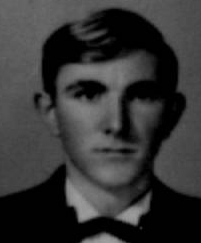

|
|||
AMAURI PAULINO PICHIBILSKI |
ANTONIO L. ARAUJO |
CELSO A. MOREIRA |
CESAR J. SORDI |
|  |
|||
DECIO PIFFER |
EDGAR DALL AGNOL |
FERNADO D. ZANONA |
GAMALIEL B. GALVÃO FILHO |
JOÃO A. SÉKULA |
JOÃO MARIA ALVES |
JOÃO M. R. BUENO |
JOSÉ A. JACOBOWSKI |
JOSÉ E. HAESBAERT |
LUIZ A. DE PAULA LOURO |
LUIZ C. BIANCHINI |
MARCO A. CARAZZAI |
|
|||
MARIO BIANCHINI |
MIGUEL SZURMIAK SOBRINHO |
NEREU S. OLIVEIRA |
OSCAR C. DE MORAES |
PAULO R. LIMA |
RENATO ROMANO |
SÉRGIO M. SANTIAGO |
WALDEMAR M. ANGRÉVES |
WILSON E. DLUGOSZ |
|||
Formandos de 1967 do Ginásio Estadual Arlindo Ribeiro
Alunos: Luis Antônio G. Louro, Wilson E. Dlugosz, José E. Jhaesbaert, Renato
Romano, Sérgio Santiago, Antônio L. Araújo, João M. R. Bueno, Amauri P Pichibilski,
João Maria Alves, Mario Bianchini, Oscar C de Moraes, Nereu S. De Oliveira
Luiz C. Bianchini, Celso A. Morreira, Marco A. Carazzai, Décio Piller, Paulo C. De
Lima, Gamalieu B. Galvão, João A. Sékula, José A.N. Jacoboski, Fernando Zanona e
Miguel Szurmiak
Professores: Inocente Furlan, Edvirges Godofredo, Secretaria Anália Queiroz,
Diretor Dr Manoel J. Madruga, Major Raul H.M. Moura, Lia Maura Martins, Danuta Dunin,
Funcionario Neco e Professor Adair Valença Soares